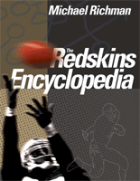

<body bgcolor="#FFFFFF" text="#000000" link="#0000FF" vlink="#CC0000" alink="#CC0000"><center><hr width="350" size="1" align="center" noshade>The definitive history of the Washington Redskins<hr width="350" size="1" align="center" noshade><p><a href="https://cdcshoppingcart.uchicago.edu/Cart/ChicagoBook.aspx?ISBN=9781592135424&&PRESS=temple" target="_top">Buy this book!</a> | <a href="https://cdcshoppingcart.uchicago.edu/Cart/Cart.aspx?PRESS=temple" target="_top">View Cart</a> | <a href="https://cdcshoppingcart.uchicago.edu/Cart/Cart.aspx?PRESS=temple" target="_top">Check Out</a></p><p></p></center><!--none//--><h1>The Redskins Encyclopedia</h1>
<h3>Michael Richman, foreword by Dexter Manley</h3>
<P>cloth 1592135420 $45.50, Aug 07, <FONT COLOR=#990033>Available</FONT>
<br>Electronic Book 1592135447 $44.50 <FONT COLOR=#990033>Available</FONT>
<BR> 432 pp
8.315x10.875
200&nbsp;halftones
</P><BLOCKQUOTE><I>"<i>For Redskins fans, this book is a treasure-trove of stories, facts, anecdotes and quotes ... It's as detailed as a Joe Gibbs game plan, as far-reaching as a Jurgensen to Taylor post pattern, and as enjoyable as a victory over the Cowboys!</i></i>"<br>&#151<b>Steve Sabol</b>, President of NFL Films</I></BLOCKQUOTE>
<p>"Hail to the Redskins" and Redskin-mania have consumed the nation's capital since 1937, the Redskins' first year in Washington. And the fervor remains as strong, if not stronger, today.
<p>
Amply illustrated with 200 photos of players, coaches, and fans, <i>The Redskins Encyclopedia</i> recounts the franchise's first 75 seasons, re-living the great-and not so great-moments in the team's storied history, and the men who helped make Sundays memorable.
<p>
Fans will read about:
<p>
*Coaches like George Allen, the eccentric, passionate man who left a legacy as an NFL pioneer, and Joe Gibbs, who formed a D-Y-N-A-S-T-Y.
<p>
*Players like star running back and all-time Redskins ground-gainer John Riggins, who once memorably told Supreme Court Justice Sandra Day O'Connor to "loosen up, Sandy baby," and Doug Williams, the first starting black quarterback to win a Super Bowl and Super Bowl MVP honors.
<p>
*The franchise's golden run of four Super Bowl appearances-and three wins-in the 1980s and early 1990s
<p>
*The legendary Redskins-Cowboys rivalry
<p>
But wait, there's more-<i>The Redskins Encyclopedia</i> also includes:
<p>
*A year by year history of the team-from 1932 to the present, with stats from each season
<p>
*Individual profiles of more than 100 Redskins players-from Sammy Baugh to Darrell Green to Art Monk to Sonny Jurgensen to Charley Taylor to Joe Theismann
<p>
*A statistical chapter that provides all of the Redskins records-a complete roster and every draft pick
<p>
With an unparalleled collection of anecdotes, quotes, trivia, and hard-to-find information, <i>The Redskins Encyclopedia</i> is a must-have book for any fan who has ever bled burgundy and gold.
<BR>&nbsp;<h2>Excerpt</h2><P>Excerpt available at <a href="http://www.temple.edu/tempress">www.temple.edu/tempress</a></p>
<BR>&nbsp;<P><p>Click <I><a href="http://www.temple.edu/tempress/audio/Richman_ESPN.mp3"target="new">here</a></I> to listen to Mike Richman on ESPN radio.
<p>Click <I><a href="http://www.temple.edu/tempress/audio/Richman_WIP.mp3"target="new">here</a></I> to listen to Mike Richman on WIP radio.
<p>Click <I><a href="http://www.temple.edu/tempress/audio/Richman_WTOP.mp3"target="new">here</a></I> to listen to Mike Richman on WTOP radio.</P><BR>&nbsp;<br>
<h2>Contents</h2><P>
<p>Contents:
<p>
Acknowledgements<br>
Foreword<br>
Introduction<br>
Chapter 1. The Franchise Is Born<br>
Chapter 2. 1932-1936: Surviving in Beantown<br>
Chapter 3. 1937-1945: Redskins Transform Washington into a Champion City<br>
Chapter 4. 1946-1961: Ominous Times for the Burgundy and Gold<br>
Chapter 5. 1962-1970: Perennial Doormat Sees Sonny Days<br>
Chapter 6. 1971-1980: Long Drought Ends, Redskins Regain Winning Flair<br>
Redskins-Cowboys: A Rivalry Ingrained in NFL Lore<br>
Chapter 7: 1981-1992: An Icon Among the NFL Elite<br>
Chapter 8: 1993-2006: Mediocrity, Redskins Style<br>
Washington Monuments<br>
Appendix: All-Time Records, Roster, Coaches, Results, Draft Picks, and Pro-Bowl Players; Year-by-Year Results; Minday Night Lights; Ring of Fame
</P><BR>&nbsp;<H2>About the Author(s)</H2>
<table><tr><td valign="top"><img src="/tempress/authors/1873_au1.gif" height="90" width="75"></td><td width="100%" valign="middle"><p><b>Michael Richman</b> is a veteran journalist who has covered sports for more than two decades. His articles on Redskins nostalgia have appeared in<i> Sports Illustrated</i> magazine and Redskins team media outlets, and he has contributed to many other publications. In 2003, he received an award from the Pro Football Researchers Association for feature writing. He works at the Voice of America in Washington. He is also co-host of the DC Sports Blitz, a weekly show on ESPN 840 in Charlottesville, VA.</P></td></tr></table>
<BR><H2>Subject Categories</H2>
<p><A HREF="/tempress/sports.html" TARGET="_top">Sports</a>
<BR><A HREF="/tempress/general.html" TARGET="_top">General Interest</a>
<BR><A HREF="/tempress/history.html" TARGET="_top">History</a>
</p>
<p align="center"><a href="https://cdcshoppingcart.uchicago.edu/Cart/ChicagoBook.aspx?ISBN=9781592135424&&PRESS=temple" target="_top">Buy this book!</a> | <a href="https://cdcshoppingcart.uchicago.edu/Cart/Cart.aspx?PRESS=temple" target="_top">View Cart</a> | <a href="https://cdcshoppingcart.uchicago.edu/Cart/Cart.aspx?PRESS=temple" target="_top">Check Out</a></p><p><font face="Arial" size="1"><a href="copyright.html" onMouseOver="window.status='Web Copyright Policy';return true;" onMouseOut="window.status=''" title="Web Copyright Policy">&copy;</a> 2015 <a href="http://www.temple.edu" target="new" onMouseOver="window.status='Link to Temple University home page';return true;" onMouseOut="window.status=''" title="Link to Temple University home page">Temple University</a>. All Rights Reserved. http://www.temple.edu/tempress/titles/1873_reg.html</font></p>